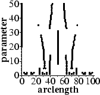
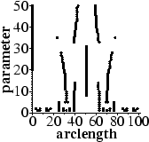

Recently an increased amount of emphasis has been placed on assessing the performance of algorithms for computer vision processing. Nowadays there are large numbers of journal publications which describe hundreds of algorithms. Often there are tens or hundreds of competing algorithms all designed to solve the same task. There needs to be a means for comparing them, so that the better ones can be selected for use.
For instance, over the last thirty years an enormous number of algorithms have been developed for segmenting a digitial curve, normally into a sequence of straight lines. Sometimes these algorithms are compared in terms of the accuracy or compression obtained by the segmented curve with respect to the original. However, since there is a tradeoff between these two factors (one can be improved at the expense of the other), they are of little use for evaluation. For several different algorithms the integral square error (ISE) is plotted against number of points (i.e. accuracy versus compression) and is shown below. The continuous line shows the optimal performance obtained by dynamic programming.
Thus it is obvious that goodness cannot be measured by considering the accuracy or compression properties of an algorithm in isolation. Our solution was to compare an algorithm's performance against some "gold standard"; in this case the optimal result. The previous problem of using accuracy or compression is now solved. The optimal result using the same number of lines as the approximation, or producing the same ISE, can be found. This enables two algorithms to be given a rating relative to the gold standard, that then can be compared meaningfully, even if the algorithms produced very different numbers of lines.
Further measures can be obtained by analysing the behaviour of algorithms
over a range of their parameter values. This produces plots of breakpoints,
somewhat like scale-space curves as these examples show:
 

From such plots methods are given to quantify measures such as
The table below shows the assessment of curve segmentation algorithms applied
to 21 test curves.
| Method | M(Line) | M(ISE) | Consistency | Merit | ||||
|---|---|---|---|---|---|---|---|---|
| |
||||||||
| point-chord distance | 86 | 10.7 | 67 | 13.5 | 1.3 | 0.80 | 53 | 18.7 |
| area | 65 | 10.9 | 55 | 10.9 | 3.4 | 1.28 | 36 | 15.4 |
| maximum deviation | 70 | 10.5 | 58 | 19.0 | 2.4 | 1.09 | 30 | 15.1 |
| length | 68 | 12.9 | 59 | 17.8 | 2.7 | 1.18 | 37 | 14.8 |
| orientation | 93 | 7.0 | 71 | 7.8 | 1.4 | 0.59 | 62 | 20.6 |
| number of crossings | 37 | 7.1 | 24 | 9.5 | 5.3 | 0.85 | 32 | 15.7 |
| Cheng & Hsu | 72 | 13.2 | 28 | 15.5 | 6.1 | 2.64 | 16 | 11.3 |
| Deguchi & Aoki | 17 | 10.8 | 18.5 | 23.0 | 6.5 | 5.37 | 32 | 17.15 |
| Deveau | 100 | 0.0 | 89 | 13.4 | 2.3 | 0.62 | 41 | 24.2 |
| Douglas & Peucker | 99 | 2.8 | 98 | 5.6 | 0.1 | 0.27 | 64 | 12.4 |
| Fu et al. | 8 | 19.5 | 1 | 19.7 | 2.6 | 0.80 | 51 | 17.3 |
| Hu & Yan | 86 | 13.9 | 89 | 11.9 | 0.0 | 0.00 | 56 | 13.4 |
| Inesta et al. | 4 | 53.3 | 0 | 48.8 | 1.6 | 0.60 | 37 | 13.3 |
| Ji & Haralick | 81 | 25.1 | 68 | 18.0 | 1.7 | 1.32 | 22 | 13.9 |
| Meloza & Ozanian | 83 | 13.7 | 61 | 18.4 | 1.9 | 1.27 | 58 | 20.0 |
| Pei & Horng | 73 | 15.7 | 74 | 12.9 | 2.1 | 1.43 | 40 | 15.2 |
| Phillips & Rosenfeld | 29 | 27.1 | 26 | 17.8 | 5.5 | 1.81 | 30 | 12.6 |
| Ramer | 100 | 0.0 | 100 | 1.1 | 0.0 | 0.00 | 74 | 19.7 |
| regular | 100 | 0.0 | 66 | 8.8 | 0.0 | 0.00 | 27 | 9.0 |
| Rosenfeld & Johnston | 85 | 13.4 | 71 | 9.1 | 2.6 | 1.27 | 52 | 25.0 |
| Wu & Levine | 59 | 31.0 | 52 | 19.6 | 2.1 | 0.95 | 32 | 15.6 |
| Zhang et al. | 96 | 5.6 | 60 | 13.9 | 2.3 | 1.07 | 36 | 14.2 |
| optimal | 100 | 0.0 | 97 | 2.8 | 0.0 | 0.00 | 88 | 9.0 |
| optimal | 100 | 0.0 | 100 | 0.0 | 0.0 | 0.00 | 100 | 0.0 |
| optimal | 100 | 0.0 | 95 | 3.1 | 0.0 | 0.00 | 77 | 10.4 |
| optimal | 100 | 0.0 | 80 | 14.2 | 0.0 | 0.00 | 63 | 13.6 |
| optimal | 100 | 0.0 | 77 | 16.4 | 0.0 | 0.00 | 40 | 18.9 |
More details are given in:
In addition, a measure for assessing edge thresholding has been
described and applied in:
In order to compare different approximation to the Euclidean distance
between a point and an ellipse boundary (useful for ellipse fitting)
several measures were developed and applied to various distance
approximations in:
Some methods for evaluating surveillance techniques are given in:
return to Paul Rosin's homepage